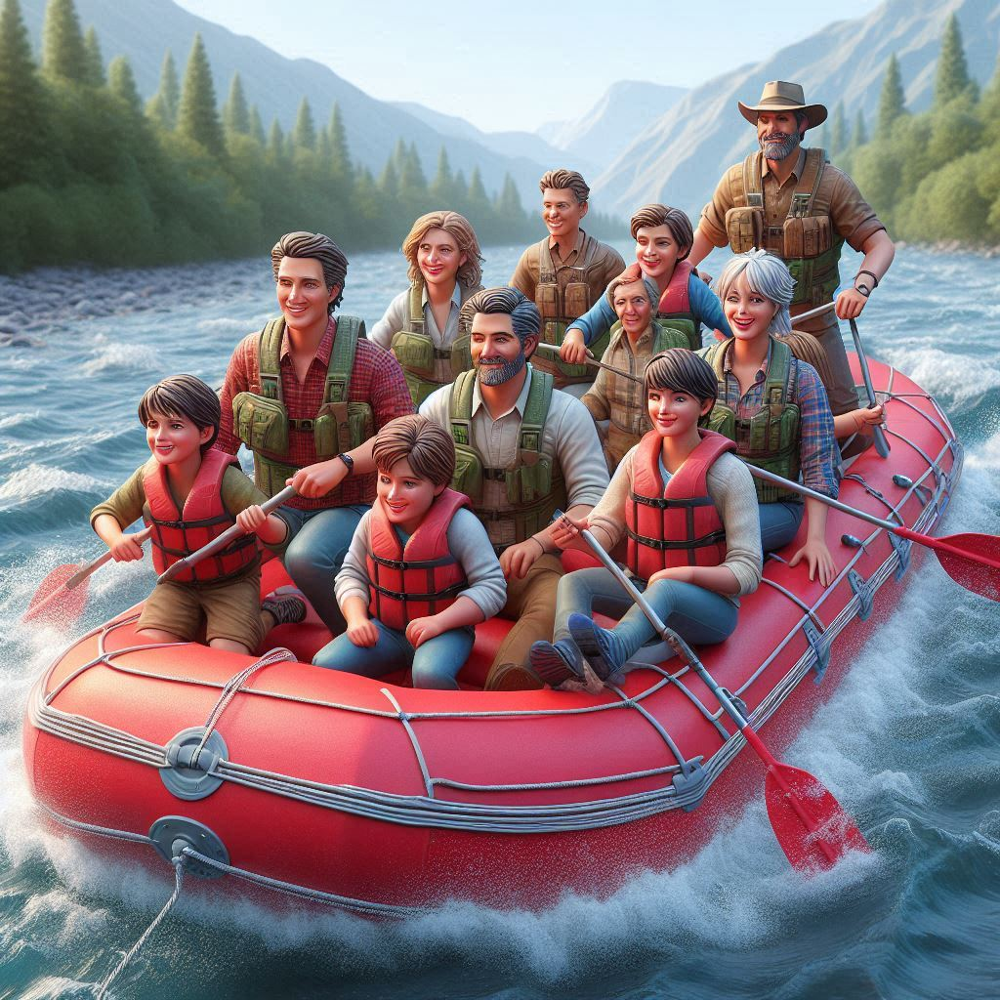
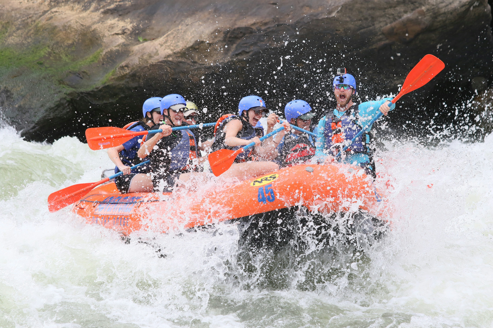

Mountain Rafting Ride the Rapids, Feel the Thrill!

Whether you’re a family looking to bond, friends seeking adventure, or seniors wanting a leisurely float, we have something for everyone.From gentle, scenic routes perfect for children and the elderly, to heart-pounding rapids for the adrenaline-seekers, we bring everyone together on the water. Ready to embrace the river with the whole crew?

Mountain Rafting isn’t just about the thrill of the rapids—it’s also about the breathtaking landscapes you’ll encounter along the way. As you navigate the water, you’ll have front-row seats to nature’s most spectacular shows, from cascading waterfalls to curious wildlife. Ready to paddle through paradise?

Our guides are not just passionate about rafting; they’re highly trained professionals with years of experience navigating rivers. They know every twist, turn, and rapid by heart, ensuring that you can focus on the fun while they handle the rest. With a deep respect for the environment and a commitment to top-notch customer service, our team is here to make your adventure seamless and memorable. Ready to ride the rapids with the best?
Want to know more?
Click Here